The ggalign package offers several align_*
functions that allow for precise control over plot layouts. In addition,
there are two primary functions for adding plots:
-
align_gg()/ggalign(): Create a ggplot object and aligns the observation data. -
free_gg()/ggfree(): Create a ggplot object without aligning the observation data.
align_gg()/ggalign() can only be used with
a stack_layout() that aligns observations
(stack_align()), while
free_gg()/ggfree() can also be added to a
stack_layout() that does not align the observations
(stack_free()).
set.seed(123)
small_mat <- matrix(rnorm(81), nrow = 9)
rownames(small_mat) <- paste0("row", seq_len(nrow(small_mat)))
colnames(small_mat) <- paste0("column", seq_len(ncol(small_mat)))
align_gg/ggalign
align_gg() is similar to ggplot in that it
initializes a ggplot data and mapping. Same
with other align_* functions. align_gg()
allowing you to provide data in various formats, including matrices,
data frames, or simple vectors. By default, it will inherit from the
layout. If a function, it will apply with the layout matrix.
align_gg() always applies a default mapping for the axis
of the data index in the layout. This mapping is
aes(y = .data$.y) for horizontal stacking (including left
and right quad layout annotation) and aes(x = .data$.x) for
vertical stacking (including top and bottom quad layout annotation). For
more information, refer to the “ggplot2 Specification” section in the
align_gg() documentation.
You can also use the ggalign() function, which is an
alias for align_gg().
The data in the underlying ggplot object will contain
following columns:
.panel: the panel for the aligned axis. It meansx-axisfor vertical stack layout (including top and bottom annotation),y-axisfor horizontal stack layout (including left and right annotation)..xor.y: thexorycoordinates..namesand.index: A factor of the names (only applicable when names exists) and an integer of index of the original data..row_namesand.row_index: the row names and an integer of row index of the original matrix (only applicable ifdatais amatrix)..column_namesand.column_index: the column names and column index of the original matrix (only applicable ifdatais amatrix).value: the actual value (only applicable ifdatais amatrixor atomic vector).
It is recommended to use
.x/.y, or.namesas thex/ymapping.
ggheatmap(small_mat) +
scale_fill_viridis_c(guide = "none") +
anno_top() +
ggalign(data = rowSums) +
geom_point(aes(y = value))
#> → heatmap built with `geom_tile()`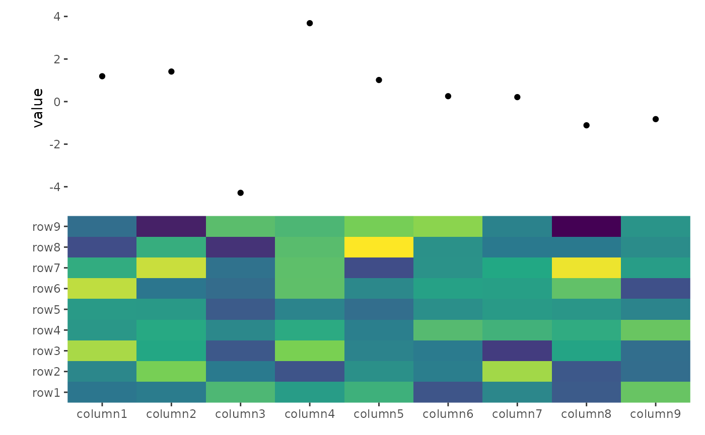
If data = NULL, the data in the underlying
ggplot object contains following columns:
-
.panel: the panel for the axis used for alignment. -
.index: the index of the original layout data. -
.xor.y: thexorycoordinates
You can use it to integrate additional elements, such as block annotation or customized panel title, into your layout.
ggheatmap(small_mat) +
anno_top(size = unit(1, "cm")) +
align_kmeans(centers = 3L) +
ggalign(data = NULL) +
plot_data(~ aggregate(.x ~ .panel, .x, FUN = median)) +
geom_tile(aes(y = 1L, fill = .panel, color = .panel)) +
geom_text(aes(y = 1L, label = .panel))
#> → heatmap built with `geom_tile()`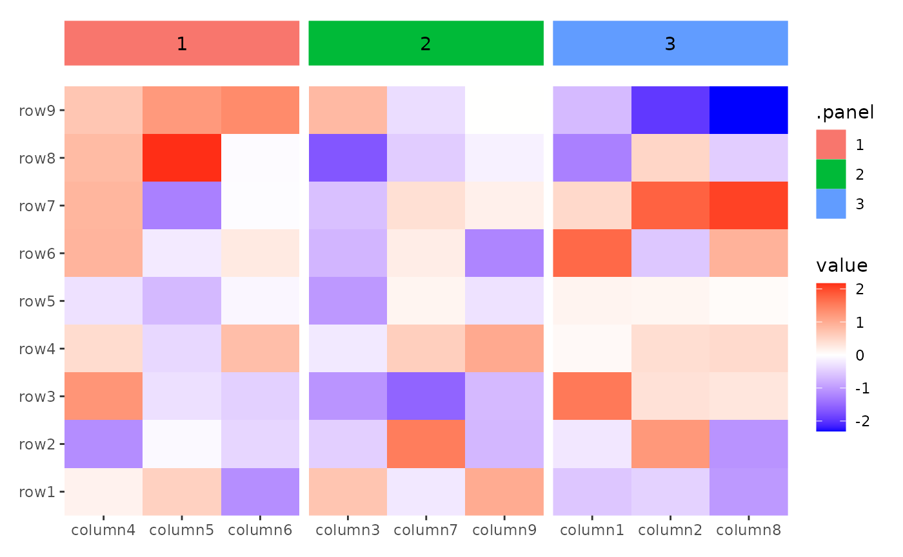
Cross panel sumamry
When used in a ggheatmap(), and the data is inherited
from the ggheatmap(), a special column
.extra_panel will be added, which is the panel information
for column (left or right annotation) or row (top or bottom annotation).
This is useful if you want to create summary plot using another axis
panel. In such cases, it’s often necessary to disable the automatic
setting of limits (limits = FALSE in
ggalign()).
set.seed(1L)
v <- stats::rnorm(50L)
split <- sample(letters[1:2], 50L, replace = TRUE)
ggheatmap(v) +
scale_fill_viridis_c() +
theme(strip.text = element_text(), strip.background = element_rect()) +
anno_right() +
align_group(split) +
anno_top(size = 0.5) +
ggalign(limits = FALSE) +
geom_boxplot(aes(.extra_panel, value, fill = .extra_panel),
# here, we use `print()` to show the underlying data
data = function(data) {
print(head(data))
data
}
) +
scale_fill_brewer(palette = "Dark2", name = "branch")
#> → heatmap built with `geom_tile()`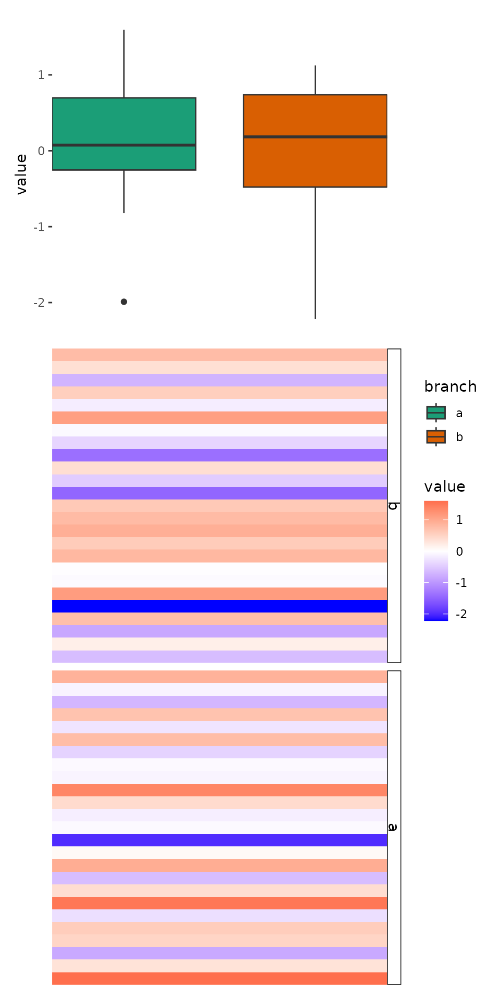
#> .row_index .column_index value .index .panel .x .extra_panel
#> 1 1 1 -0.6264538 1 1 1 b
#> 2 1 2 0.1836433 1 1 1 b
#> 3 1 3 -0.8356286 1 1 1 b
#> 4 1 4 1.5952808 1 1 1 a
#> 5 1 5 0.3295078 1 1 1 a
#> 6 1 6 -0.8204684 1 1 1 aThis approach replicates the functionality of ComplexHeatmap::anno_summary(), but is versatile enough to be used with any heatmap, not just single-column or single-row heatmaps.
ggheatmap(small_mat) +
theme(axis.text.x = element_text(angle = -60, hjust = 0)) +
anno_top() +
align_dendro(aes(color = branch), k = 3L) +
scale_color_brewer(palette = "Dark2") +
anno_right(size = 0.5) +
ggalign(limits = FALSE) +
geom_boxplot(aes(y = .extra_panel, x = value, fill = factor(.extra_panel))) +
scale_fill_brewer(palette = "Dark2", name = "branch")
#> → heatmap built with `geom_tile()`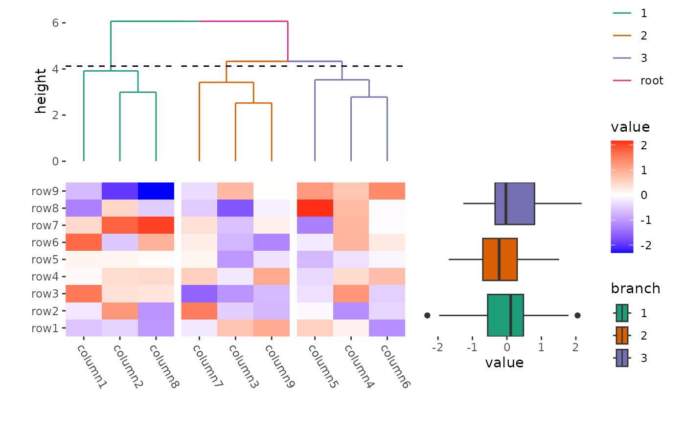
Plot titles
ggplot2 only allow add titles in the top or add caption
in the bottom. The ggalign package extends this capability, allowing you
to place titles around any border of the plot using the
patch_titles() function.
ggheatmap(small_mat) +
patch_titles(left = "left patch title", bottom = "bottom patch title") +
theme(axis.text.x = element_text(angle = -60, hjust = 0)) +
anno_top() +
align_dendro(aes(color = branch), k = 3L) +
scale_color_brewer(palette = "Dark2") +
patch_titles(top = "top patch title") +
anno_right(size = 0.5) +
ggalign(limits = FALSE) +
geom_boxplot(aes(y = .extra_panel, x = value, fill = factor(.extra_panel))) +
scale_fill_brewer(palette = "Dark2", name = "branch") +
patch_titles(right = "right patch title")
#> → heatmap built with `geom_tile()`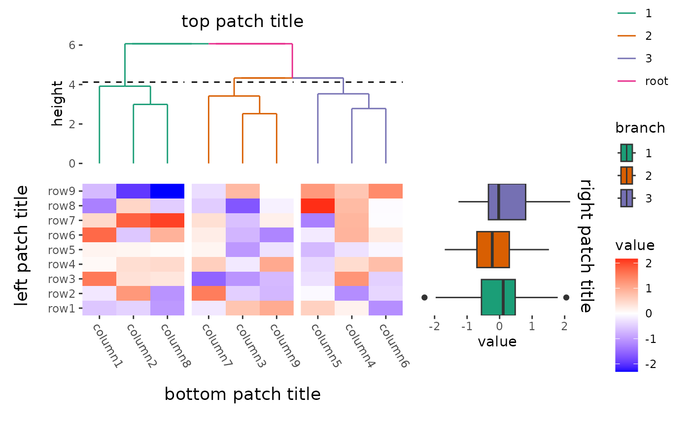
free_gg/ggfree
The free_gg() function allows you to incorporate a
ggplot object into your layout. Unlike align_gg(), which
aligns every axis value precisely, free_gg() focuses on
layout integration without enforcing strict axis alignment.
ggfree() is an alias for free_gg.
Internally, the function uses fortify_data_frame() to
transform the input into a data frame. For matrices, it converts them
into a long-formatted data frame. Note that ggfree() does
not provide a default aesthetic mapping, which contrasts with
ggalign(). You will need to manually provide the default
mappings.
All annotations in ggheatmap() are
stack_align(). When used in a stack_align(),
you typically do not want to inherit from the layout matrix and should
input a data frame manually. The data argument must be
explicitly provided, as it comes after ..., but we rarely
used it in a stack_align().
ggheatmap(small_mat) +
anno_top() +
ggfree(aes(wt, mpg), data = mtcars) +
geom_point()
#> → heatmap built with `geom_tile()`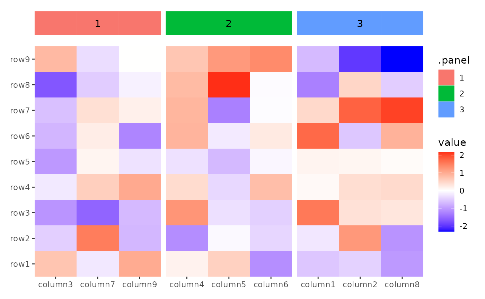
It is more commonly used in a stack_free(), where you
usually want to inherit from the layout data frame. All annotations in
ggside() are stack_free().
ggside(mpg, aes(displ, hwy, colour = class)) -
geom_point(size = 2) +
anno_top(size = 0.3) +
ggfree() +
geom_density(aes(displ, y = after_stat(density), colour = class), position = "stack") +
anno_right(size = 0.3) +
ggfree() +
geom_density(aes(x = after_stat(density), hwy, colour = class),
position = "stack"
) +
theme(axis.text.x = element_text(angle = 90, vjust = .5))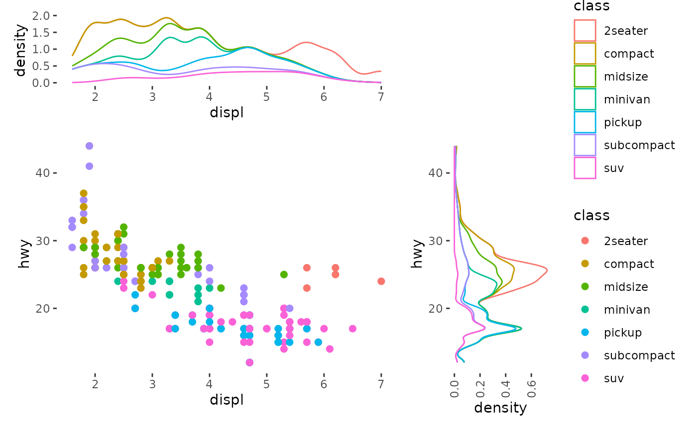
Alternatively, you can directly input the ggplot object.
ggheatmap(small_mat) +
anno_top() +
ggfree(data = ggplot(mtcars, aes(wt, mpg))) +
geom_point()
#> → heatmap built with `geom_tile()`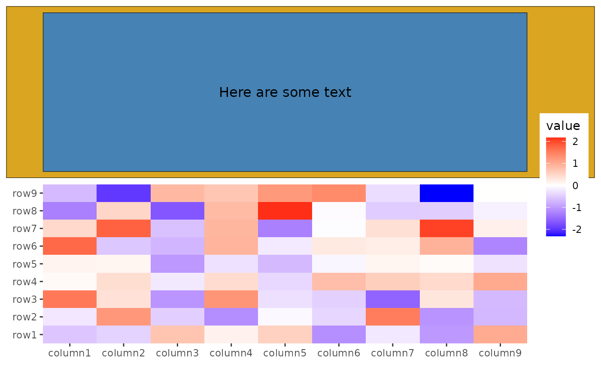
You can also add the ggplot object directly without
using ggfree(). However, doing so will limit control over
the plot (like plot area size, and active
components):
ggheatmap(small_mat) +
anno_top() +
ggplot(mtcars, aes(wt, mpg)) +
geom_point()
#> → heatmap built with `geom_tile()`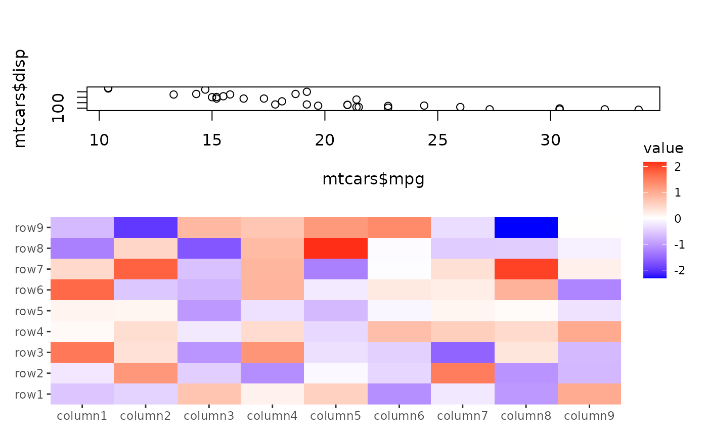
ggwrap() and inset()
The ggwrap() function allows you to wrap objects that
can be converted into a grob, turning them into a ggplot
for plotting. Further you can still add ggplot elements like title,
subtitle, tag, caption, and geoms using the same approach as with normal
ggplots (using ggtitle(), labs(),
geom_*()) as well as styling using theme().
This enables you to pass these wrapped objects into
ggfree().
library(grid)
ggheatmap(small_mat) +
anno_top() +
# `ggwrap()` will create a `ggplot` object, we use `ggfree` to add it into the layout
ggfree(data = ggwrap(rectGrob(gp = gpar(fill = "goldenrod")), align = "full"))
#> → heatmap built with `geom_tile()`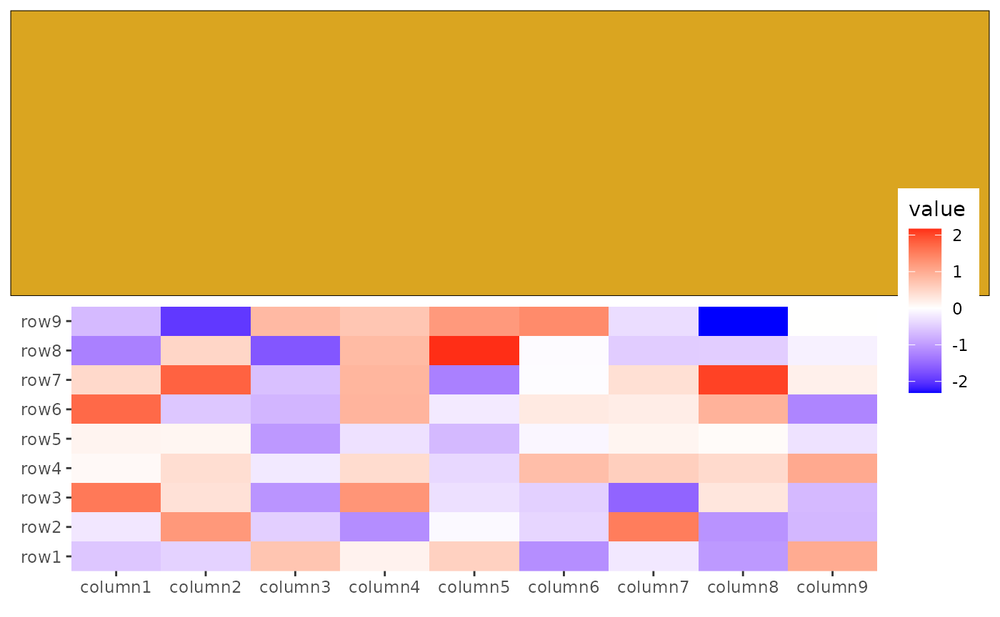 You can also integrate base plots, pheatmap, ComplexHeatmap, e.g.
Additionally, you can add any graphics as a inset to a ggplot using
the inset() function. Like ggwrap(),
inset() can accept any object that can be converted to a
grob.
ggheatmap(small_mat) +
anno_top() +
ggfree(data = ggwrap(rectGrob(gp = gpar(fill = "goldenrod")), align = "full")) +
# we can then add any inset grobs (the same as ggwrap, it can take any objects
# which can be converted to a `grob`)
inset(rectGrob(gp = gpar(fill = "steelblue")), align = "panel") +
inset(textGrob("Here are some text", gp = gpar(color = "black")),
align = "panel"
)
#> → heatmap built with `geom_tile()`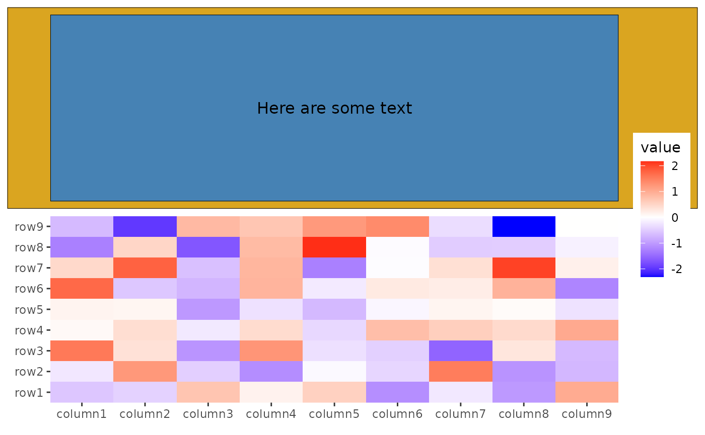
Session information
sessionInfo()
#> R version 4.4.2 (2024-10-31)
#> Platform: x86_64-pc-linux-gnu
#> Running under: Ubuntu 22.04.5 LTS
#>
#> Matrix products: default
#> BLAS: /usr/lib/x86_64-linux-gnu/openblas-pthread/libblas.so.3
#> LAPACK: /usr/lib/x86_64-linux-gnu/openblas-pthread/libopenblasp-r0.3.20.so; LAPACK version 3.10.0
#>
#> locale:
#> [1] LC_CTYPE=C.UTF-8 LC_NUMERIC=C LC_TIME=C.UTF-8
#> [4] LC_COLLATE=C.UTF-8 LC_MONETARY=C.UTF-8 LC_MESSAGES=C.UTF-8
#> [7] LC_PAPER=C.UTF-8 LC_NAME=C LC_ADDRESS=C
#> [10] LC_TELEPHONE=C LC_MEASUREMENT=C.UTF-8 LC_IDENTIFICATION=C
#>
#> time zone: UTC
#> tzcode source: system (glibc)
#>
#> attached base packages:
#> [1] grid stats graphics grDevices utils datasets methods
#> [8] base
#>
#> other attached packages:
#> [1] ggalign_0.0.5.9000 ggplot2_3.5.1
#>
#> loaded via a namespace (and not attached):
#> [1] gtable_0.3.6 jsonlite_1.8.9 dplyr_1.1.4 compiler_4.4.2
#> [5] tidyselect_1.2.1 jquerylib_0.1.4 systemfonts_1.1.0 scales_1.3.0
#> [9] textshaping_0.4.0 yaml_2.3.10 fastmap_1.2.0 R6_2.5.1
#> [13] labeling_0.4.3 generics_0.1.3 knitr_1.49 tibble_3.2.1
#> [17] desc_1.4.3 munsell_0.5.1 RColorBrewer_1.1-3 bslib_0.8.0
#> [21] pillar_1.9.0 rlang_1.1.4 utf8_1.2.4 cachem_1.1.0
#> [25] xfun_0.49 fs_1.6.5 sass_0.4.9 viridisLite_0.4.2
#> [29] cli_3.6.3 pkgdown_2.1.1 withr_3.0.2 magrittr_2.0.3
#> [33] digest_0.6.37 lifecycle_1.0.4 vctrs_0.6.5 evaluate_1.0.1
#> [37] glue_1.8.0 farver_2.1.2 ragg_1.3.3 fansi_1.0.6
#> [41] colorspace_2.1-1 rmarkdown_2.29 tools_4.4.2 pkgconfig_2.0.3
#> [45] htmltools_0.5.8.1